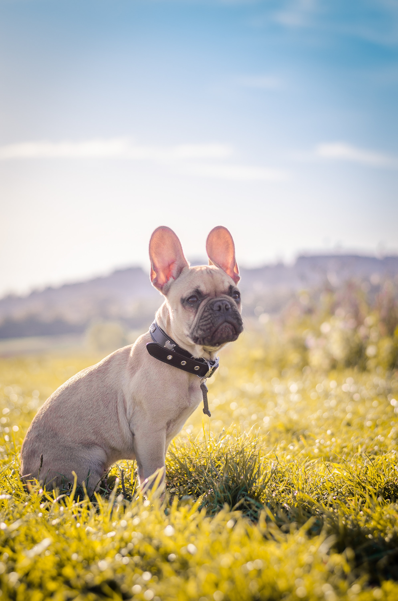

History!
The origin of the modern French Bulldog breed descends directly from the dogs of the Molossians, an ancient Greek tribe. The dogs were spread throughout the ancient world by Phoenician traders. British Molossian dogs were developed into the English Mastiff, a sub-breed of the Mastiff was the Bullenbeisser, a type of dog used for bull-baiting. Bulldogs were very popular in the past, especially in Western Europe. One of its ancestors was the English bulldog. Americans had been importing French Bulldogs for a while, but it was not until 1885 when they were brought over in order to set up an American-based breeding program. They were mostly owned by society ladies, who first displayed them at the Westminster Kennel Club Dog Show in 1896. They arrived again in the following year with even more entries, where the judging of the breed would go on to have future ramifications. The judge in question at the dog show, a Mr. George Raper, only chose winners with "rose ears" ears that folded at the tip, as with the standard for Bulldogs. The ladies formed the French Bull Dog Club of America and created the breed standard which stated for the first time that the "erect bat ear" was the correct type.
Characteristics
- Companian dog breed
- Minimal exercise needs
- Patient and affectionate
- Average level of canine intelligence
Health
- Lifespan of 8 to 10 years
- Prone to skin conditions
- Compromised breathing system
- Requires regular grooming
More info on Bulldogs find here.